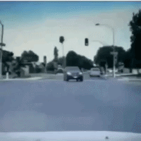

갓겜 ㅋㅋ
갓겜 ㅋㅋ
개꿀잼이넼ㅋㅋㅋㅋㅋㅋ
예라이!
아니 두번째는 자전거 도로에서 잘가고 있는거 아니야?ㅋㅋㅋㅋㅋ
그게 중요한가요?
갓겜맞네 ㅋㅋ
ㅁㅊㅋㅋㅋㅋㅋㅋㅋㅋㅋㅋ

나도 도로에서 킥보드 타는 애들 보는 족족쳤는데 쟤들이 내 차 호출하면 가져오고 저거 타고 돌아가더라고..... 그래서 자전거만 치고있음
뭔소리여..
멀리있는 내 차 가져오는 호출 기능이 있는데 픽업 기사 npc가 내 차 타고 와서 저 킥보드로 돌아감
아아 글쿤. ㅋㅋ
스쿠터브로스 직원임 ㅋㅋㅋ 타고 돌아갈때 잘가라고 인사도 함
지금이순간부터 gta6는 갓겜이다
저렇게 쓸수도있구나 ㅋㅋㅋ 다뒤졌다
요듬 쇼츠에 고속도로에서 검문?하는 경찰이랑 싸움븉이는거 뜨던데 잼써보임
킥보드는 개통쾌하네 ㅋㅋ
문콕!
어케하는거지 세모 두번?
네모일걸
세모 두번은 시동 안 끄고 내리기라 이것도 기억해놨다가 유용하게 써라
네모 한번
갓겜 ㅋㅋㅋㅋㅋㅋ
ㅋㅋㅋㅋㅋㅋ
파워챠
자라니 퇴치ㅋㅋ
아이 시발 pc는 언제 나오는 거냐고!
킥라니 컷!
오늘 전동킥보드 타고다니면서 노숙자들 발로참
킥보드 ㅋㅋㅋ 이게 옳게된 게임이지
저분들은 킥라니가 아니고 주인공의 수십키로 떨어진 차를 1초 내로 탁송해주시는 기사님들이시다..
개문사고로 처리되니까 범죄로 안보는건가
예압
ㅋㅋㅋㅋㅋㅋㅋㅋㅋㅋㅋㅋㅋㅋㅋㅋ